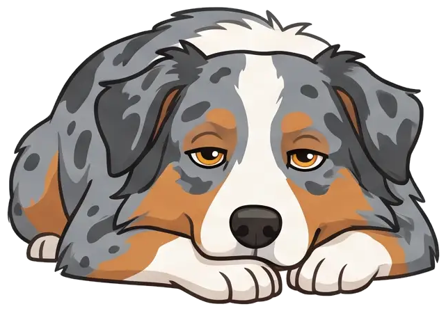

Wusstest du?
Dein Hund
riecht bis zu
100.000-mal
besser als du.
riecht bis zu
100.000-mal
besser als du.

*schnüffel*
Riechzellen im Vergleich
Eine Nase wie
ein Labor.
ein Labor.
Hund
0 Mio.
Mensch
0 Mio.

≈ 60-mal so viele
Fig. 1 — Die Hundenase
Links und rechts
riechen getrennt.
riechen getrennt.
Heute in der Gassi-Zeitung
Gassi ist sein
Nachrichtenblatt.
Nachrichtenblatt.
Bello war hier vor 10 Min.
Neue Katze im Viertel Eilmeldung
Jemand hatte Pizza Lokales

dein hund riecht bis zu 100.000-mal besser als du
seine nase hat rund 300 millionen riechzellen
deine nur etwa 5 millionen
jedes nasenloch riecht für sich
so weiß er, woher ein duft kommt
gassi ist für ihn wie zeitung lesen
Folgen für mehr Hundewissen